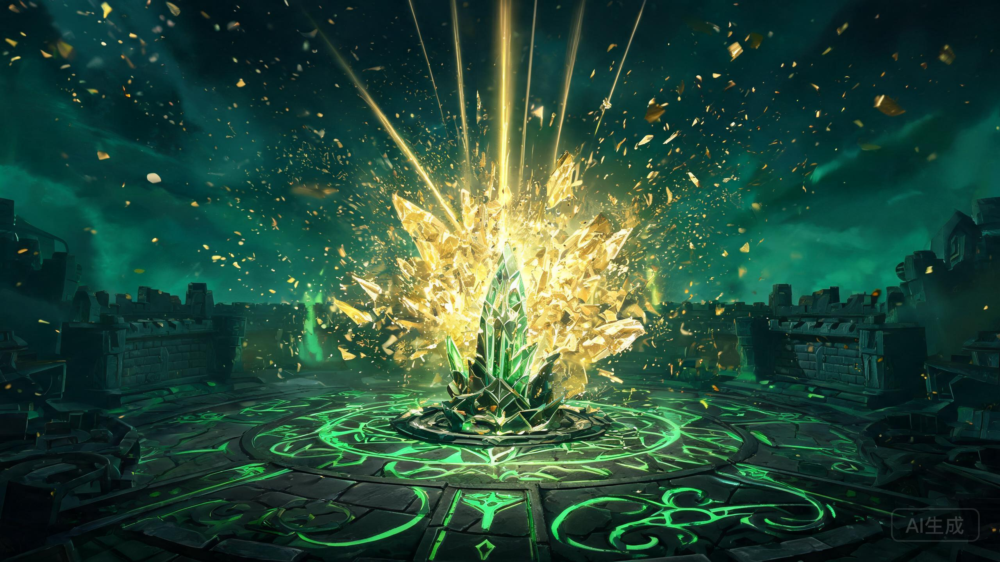

▲ 水晶枢纽爆炸概念图（AI创作，非官方素材）
赛前，ShowMaker说："没有我们赢不了的队伍。"
三个小时后，BLG用三个干净利落的大胜局，帮他把这句话完整地咽了回去。3-0，横扫，DK回家。
01 没有悬念的BO5
这是本届S16到目前为止最没有悬念的一场BO5。BLG五个人像是提前写好了剧本：上路压制，中路接管，下路收割，打野收尾。DK每一局都在找翻盘点，每一局都只找到了BLG给的那一个。
第三局，DK水晶枢纽轰然爆炸，比赛戛然而止。从瑞士轮第五轮2-0掀翻LCK二号种子HLE，到今天横扫DK四号种子——BLG对LCK的战绩，现在是3-0（局数6-0）。

▲ 比赛结果（自制图）
02 对位：全面碾压

▲ 对位一览（自制图，据公开资料整理）
赛前大家担心的是DK上单Siwoo的激进打法，担心ShowMaker的大赛底蕴，担心首次世界赛之行的Smash会打出奇效。
结果：Bin用表现兑现了赛前"世一上"的放话，Siwoo的激进成了送头；Knight状态回暖，中路对线把底蕴二字按在地上；Elk下路稳定输出，Smash的世界赛首秀没有剧本；Xun的资源控制让Lucid整场找不到节奏。
五条对位线，一条都没有输。这不是某个人Carry，是BLG的团队碾压。
03 韩国解说当场破防
比赛的最后时刻，韩国解说席传出了本届S16最出圈的一段音频：
"啊啊啊，这能被这样虐吗？披萨！差距太大了啊！"
一句"披萨"，一夜之间成了LPL观众的接头暗号。竞技体育最残忍的地方就在这里：一边是BLG fan的狂欢，一边是解说员的失声。
04 今年LPL，真的不一样了
昨天，IG掀翻TES，时隔七年重回四强。今天，BLG横扫DK，把"二号种子"的含金量拉满。
四强已经锁定两个LPL席位。剩下的两个名额，交给接下来两天剩下的两场八强。
BLG俱乐部赛后发文："破风而行，信念愈坚。征途未竟，下一程，继续向着更高处进发。"
半决赛无论对手是谁，LPL都已经保底一个决赛席位——前提是，四强内战别打得太伤。
评论区聊聊：半决赛你最想看到BLG碰谁？另外，"披萨"这个梗你给几分？
—— LPL，今年真的不一样 ——
信息来源：LPL赛事官方、BLG电子竞技俱乐部官微、澎湃新闻/人民电竞、直播吧、虎扑、腾讯新闻等公开报道。首图为AI创作（非官方素材），比分卡与对位卡为自制图，据公开报道整理。